第8章
受任意类型向心力作用的物体环绕轨道的确定
命题40 定理13
如果一个物体受任意一种向心力的作用以某种方式运动，而另一物体沿一条直线上升或下落，且在某一相同高度上它们的速度相等，则在一切相等高度上它们的速度都相等。
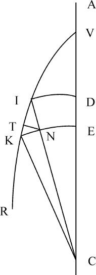
令一物体由A通过D和E落向中心C，令另一物体由V沿曲线VIKk 运动，以C为中心，取任意半径作同心圆DI，EK与直线AC相交于D和E，与曲线VIK相交于I和K。作IC与KE交于N，并在IK上作垂线NT；令两同心圆的间距DE或IK为极小；设在D与I的两物体速度相等。因为距离CD和CI相等，在D和I处的向心力也必相等。用等长短线DE和IN表示这些向心力；将长IN（由运动定律的推论Ⅱ）分解为两个力，NT与IT，则力NT的作用沿线段NT的方向，与物体的路径相垂直，对物体在该处的速度无影响或改变，只把它拉开直线方向，使它连续偏离轨道切线，沿曲线路径ITKR运行。所以该力只起到这种作用。而另一个力IT作用于物体的运动方向上，全部用于对它加速，在极短时间里产生的加速度正比于该时间，所以在相同的时间里，物体在D和I的加速度正比于线段DE，IT（如果取新生线段DE，IN，IK，IT，NT的最初比值）；而在不等的时间里加速度正比于这些线段与时间的乘积。但由于速度相等（在D和I），物体掠过DE和IK所用的时间正比于DE和IK的长度，所以，物体在通过线段DE和IK时的加速度正比于DE与IT，以及DE与IK的乘积；即，等于DE的平方比乘积IT·IK。而IT·IK等于IN的平方，即等于DE的平方；所以，物体在由D和I运动到E和K时产生的加速度相等。所以，物体在E和K的速度也相等：由相同的理由知，它们在以后任何相等的距离上总是相等的。
证毕。
又由相同的理由，在与中心相同距离处速度相等的物体，在上升到相同距离处时，递减的速度也相等。
推论Ⅰ．一个物体不论是悬于一根弦上摆动，或是被迫沿一光亮、完全平滑的表面作曲线运动，而另一物体沿直线上升或下落，只要它们在某一相同高度处速度相等，则它们在所有相同高度处的速度都相等。因为，在摆动物体的弦上，或在容器完全平滑的表面上，所发生的情形与横向力NT的影响相同。它既不使物体加速也不使之减速，只是迫使它偏离直线运动。
推论Ⅱ．设量P是物体由中心所能上升到的最大距离，不论是通过摆动，或是沿曲线转动，或是由曲线上某一点以其在该点的速度向上抛出。令量A为物体由其轨道上任意一点到中心的距离；再令向心力总是正比于量A的幂A n －1 ，该幂的指数n －1是任意数减一，则在任意高度A，物体的速度正比于
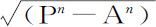
，因而是给定的。因为由命题39，沿直线上升或下落的物体的速度等于该值。命题41 问题28
设任意类型的向心力，以及曲线图形的面积均为已知；求物体在其上运动的曲线，以及沿此曲线运动的时间。
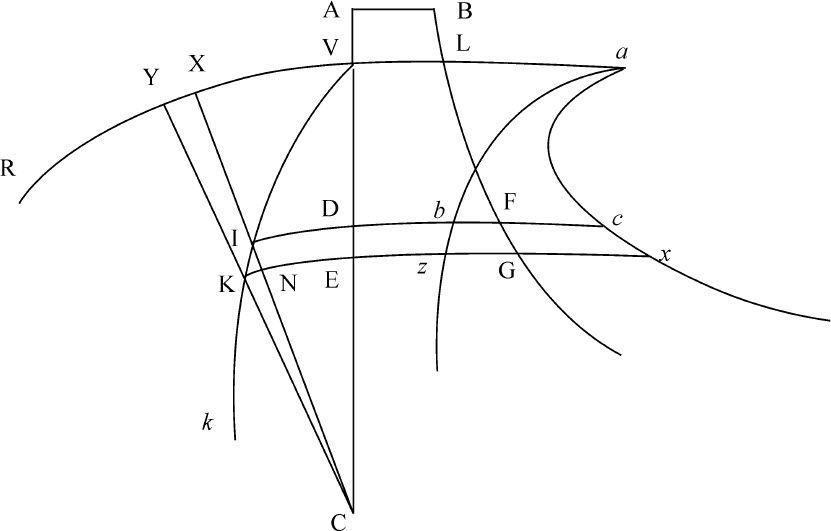
令任意向心力指向中心C，要求出曲线VIKR。有一已知圆VR，其中心是C，任意半径是CV；由同一中心作另两个任意圆ID，KE，与曲线相交于I和K，与直线CV相交于D和E。然后作直线CNIX与圆KE，VR相交于N和X，作直线CKY与圆VR相交于Y。令点I与K无限接近；令物体由V通过I和K运动到k ；再令点A为另一物体开始下落的处所，使到达D时的速度等于第一个物体在I的速度。以下方法与命题39相同，在最短给定时间内掠过的短线段IK将正比于该速度，因而也正比于其平方等于面积ABFD的直线，所以正比于时间的三角形ICK可以求出，所以KN反比于高度IC；即（如果给定任意量Q，高度IC等于A），正比于
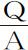
。令该量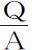
等于Z，设Q的大小在某一情形下使得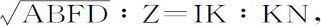
则在所有情形下
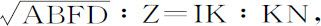
即
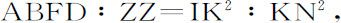
由减法，
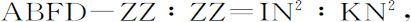
所以，
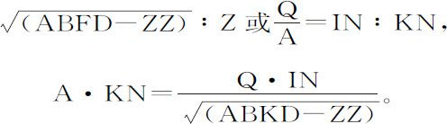
由于
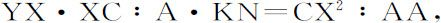
所以有
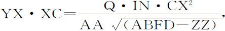
所以，在垂线DF上分别连续取Db ，Dc 等于
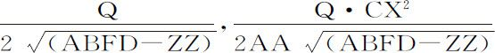
，画出曲线ab ，ac ，焦点b 和c ，再由点V作直线AC的垂线Va ，分割曲线面积VDba ，VDca ，并画出纵坐标Ez ，Ex 。因为乘积Db ·IN或Dbz E等于乘积A·KN的一半，或等于三角形ICK；而乘积DC·IN或Dcx E等于乘积YX·XC的一半，或等于三角形XCY；即，因为VDba ，VIC的新生面积元Dbze ，ICK总是相等，而VDca ，VCX的新生面积元Dcx E，XCY总是相等：所以产生的面积VDba 将等于产生的面积VIC，因而正比于时间，而产生的面积VDca 等于产生的扇形VCX。所以，如果给定任意时间，其间物体由V开始运动，则正比于该时间的面积VDba 也就给定，因而物体的高度CD或CI也就给定，面积VDca 和与之相等的扇形VCX以及扇形张角VCI也都给定。而由已知的角VCI，高度CI，也可以求知物体在该时间之末时的处所。完毕。
推论Ⅰ．因此，很容易找出物体的最大和最小高度，即曲线的回归点。因为当直线IK与NK相等时，即面积ABFD等于ZZ时，回归点通过由中心作向曲线VIK的垂线IC。
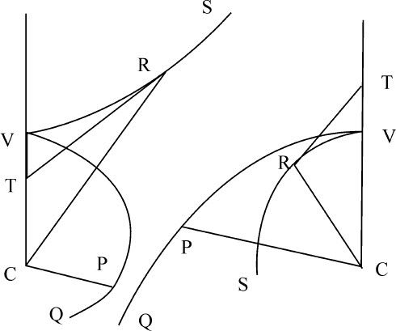
推论Ⅱ．也容易求出曲线在任意处所与直线IC的夹角KIN：通过给定的物体的高度IC，即通过使该角的正弦比半径等于KN比IK，也就是等于Z比面积ABFD的平方根。
推论Ⅲ．如果通过中心C和顶点V作一条圆锥曲线VRS，由其上任意一点，如R，作切线RT与主轴CV的延长线交于点T，连接CR。作直线CP等于横坐标CT，使角VCP正比于扇形VCR；如果指向中心的向心力反比于物体到中心距离的立方，且由处所V以适当速度沿垂直于直线CV的方向抛出一物体，则该物体总是沿着点P所在的曲线VPQ运动；如果圆锥曲线VRS是双曲线，则物体将落入中心；但如果它是椭圆，物体将连续升高，越来越远直至无限。反之，如果物体以任意速度脱离处所V，则根据它是直接落向中心，或是直接脱离而去，可判明图形VRS是双曲线或椭圆，该曲线可以给定比率增大或减小角VCP求出。在向心力变成离心力时，物体将直接沿曲线VPQ离去，该曲线可以取角VCP正比于椭圆扇形VRC，取长度CP等于长度CT，由上述相同方法求出。所有这些都可由上述命题通过某一曲线的面积求出，其方法十分容易，为求简捷在此从略。
命题42 问题29
已知向心力规律，求由给定处所以给定速度沿给定直线方抛出的物体的运动。
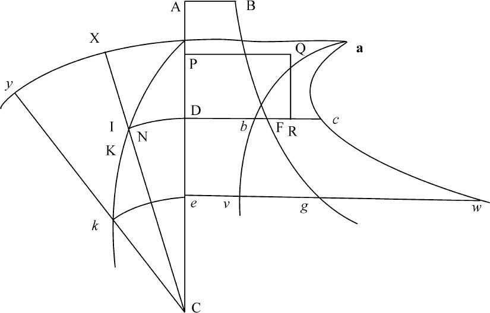
假设条件与上述三个命题相同，令物体在处所I抛出，方向沿着小线段IK，速度与另一物体在均匀向心力作用下由处所P下落到D处所获得的相同；令该均匀力比物体在I所受到的最初推动力等于DR比DF。令该物体向k 运动；关于中心C以CR为半径作圆ke ，与直线PD相交于e ，再作曲线BFg ，abv ，acw 的纵坐标eg ，ev ，ew 。由给定矩形PDRQ和第一个物体所受到的向心力的定律，曲线BFg 可通过命题27的作图及其推论I求出。然后由给定角CIK求出新生线段IK，KN的比例；因而，由命题28的作图法，求出量Q，以及曲线abv ，acw ；所以，在任意时间Dbve 终了，物体的高度Ce 或Ck ，与扇形XCy 相等的面积Dcwe ，以及角ICK都可以求出，即可以找到物体所在的处所k 。
完毕。
在以上几个命题中我们假设向心力随其到中心的距离而依照某种可以任意设定的规律变化，但在到中心相同距离处向心力处处相等。
迄此所讨论的物体运动都是沿着不动轨道运动。现在我们要在环绕力的中心的轨道上的物体运动中增加某些内容。